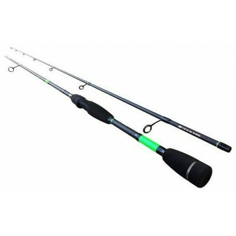
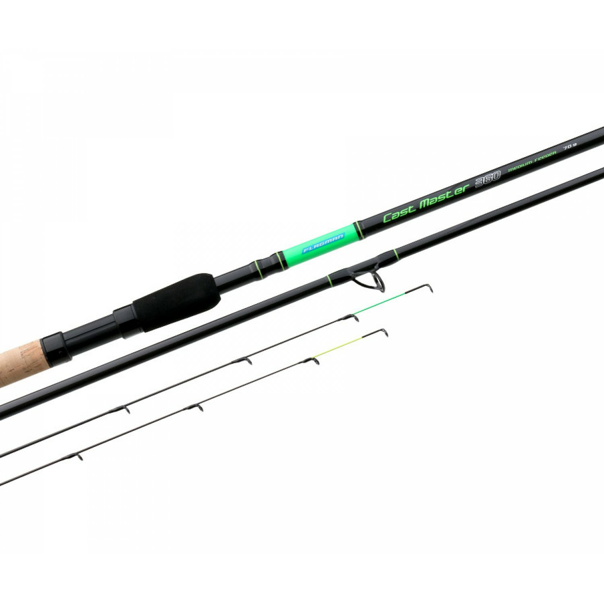
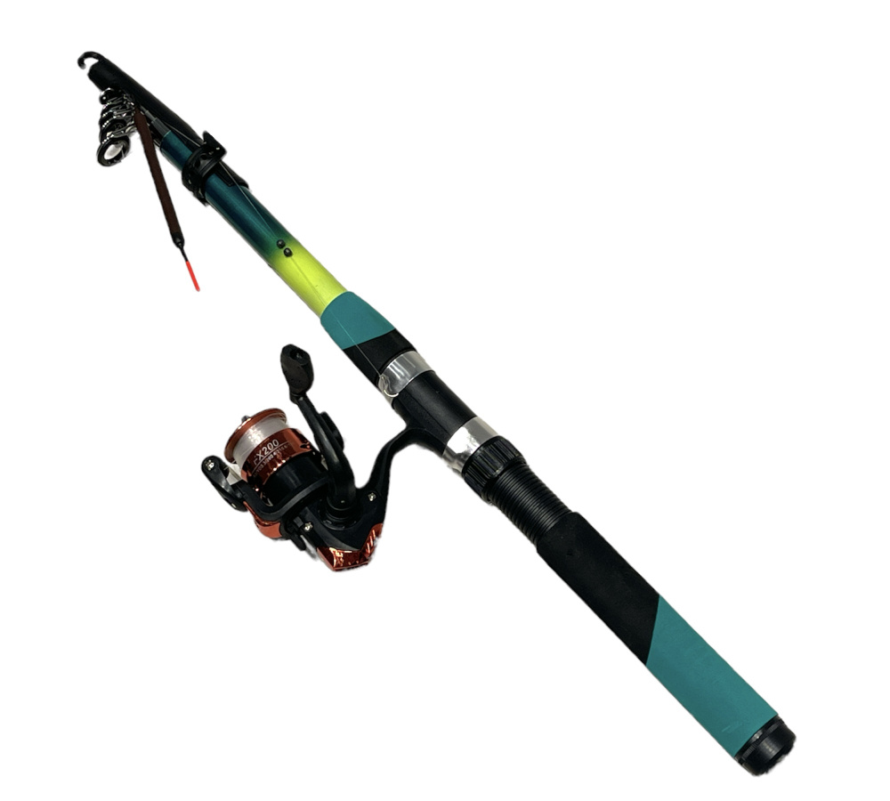
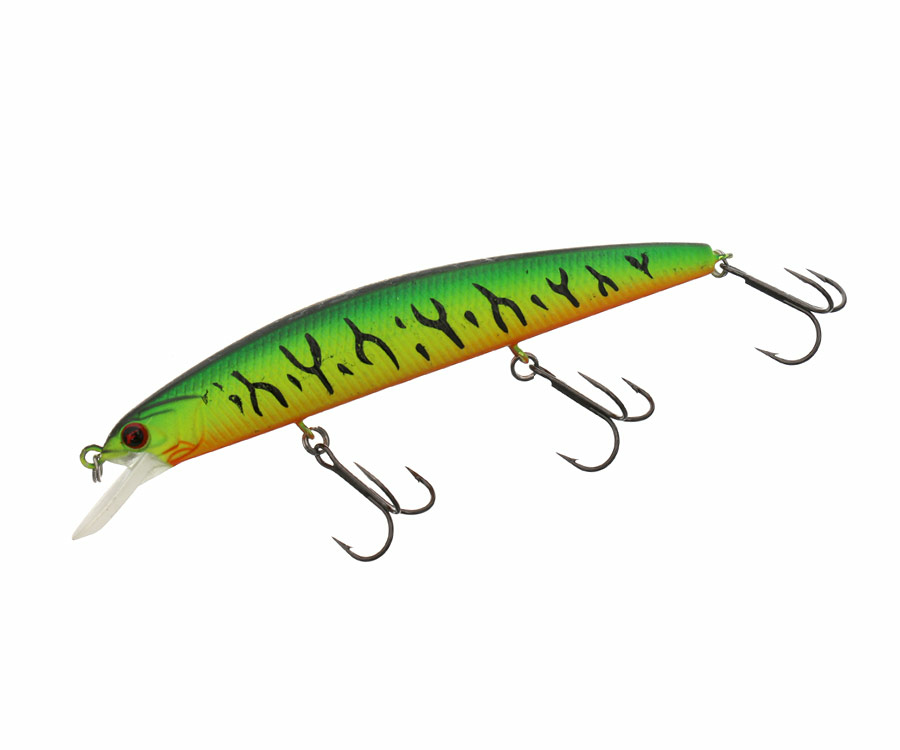
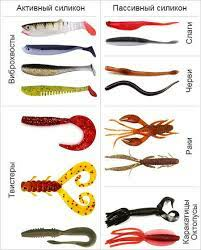

Лучший рыболовный магазин
FishMag
Вы точно останетесь c уловом
8 474
Покупок
>15000
Товара
>20000
Объем выловленной рыбы нашей продукцией
56,49%
Процент проданного товара
Наш товар

Спиннинг
С помощью него можно поимать хищную рыбу, а именно щуку, окуня, судака и жереха.
Как использовать
Можно поставить искуственную приманку и ловить на нее, а можно насадить живца и ловить на него.

Фидер
Предназначин для поимки мирной рыбы, а именно леща, густерку и карася на дальнем расстоянии.
Как использовать
Нужно прицепить кармушку и привязать поводок. В кармушку нужно закинуть прикормки.

Удочка
Предназначена для ловли мирной рыбы у берега, а именно уклейка, плова, краснопёрка, карась и небольшие подлещики.
Как использовать
Оснощаешь удочку поплавком, грузилами и крючком, насаживаешь на крючок червя или опарыша и ждёшь поклёвки.

Воблер
Предназначен для поимки хищной рыбы в основном щуки или окуня.
Как использовать
Необходимо забросить его в водоём и плавно крутить катушку, он будет плыть как раненная рыба потому что в нём есть утижилители которые предают ему такой эффект.

Джиг
Резиновая приманка предназначенная для поимки хищной рыбы в основном окуня или судака.
Как использовать:
Протыкаешь его джиг головкой и прикрепляешь к плетёнке забрасываешь и проводишь.